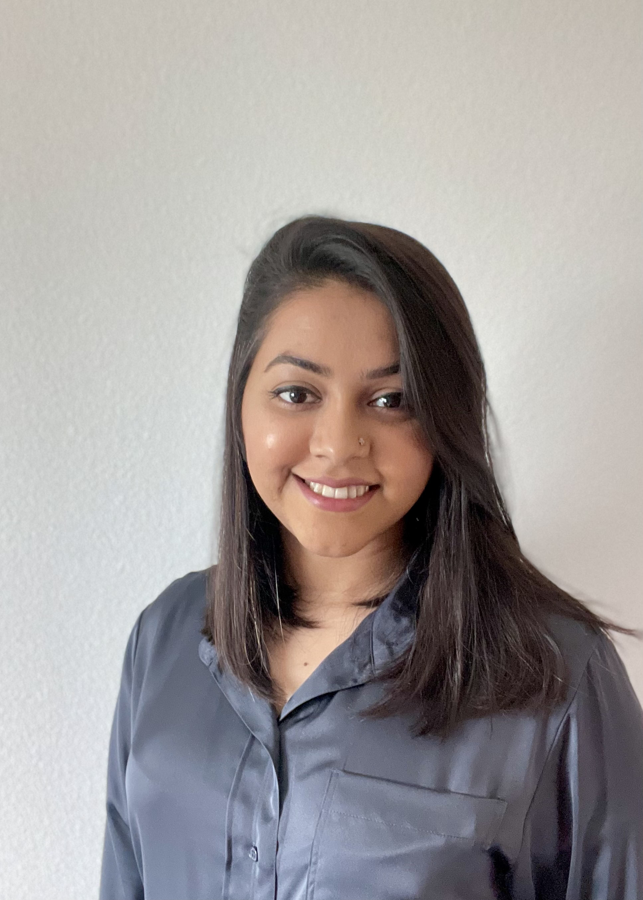

|  |
Sarah ShoileePhD Candidate.Department of Computer Science,Vrije Universiteit Amsterdam Research Group: User-Centric Data Science [s.b.a.shoilee@vu.nl] [cv] PhD Candidate. VU Amsterdam |
My research aims to foster knowledge discovery in complex and critical domains—particularly within the field of provenance research—by leveraging hybrid data science methods and socio-technical perspectives. I focus on the integration of Semantic Web technologies, Linked Data, and interdisciplinary approaches to extract, model, and visualize rich contextual information from historical and cultural heritage sources. Through this work, I strive to improve data quality, enhance interpretability, and develop intelligent tools that support meaningful human-computer collaboration in uncovering hidden patterns and connections, especially in colonial heritage collections.
Building on my current work, my future research will continue to explore hybrid processes in data science, particularly within socio-technical systems where human and computational elements interact in complex ways. I am deeply interested in advancing interdisciplinary methods that bridge the gap between technical innovation and domain-specific expertise—especially in the context of cultural heritage, digital humanities, and historical data.
A central focus of my future work will be on Knowledge Discovery and Capture, encompassing the extraction, mining, and communication of structured and unstructured information across diverse data sources. I aim to push the boundaries of what’s possible with Semantic Web technologies and Linked Data, developing frameworks and tools that make knowledge more findable, interpretable, and actionable—both by machines and by humans.